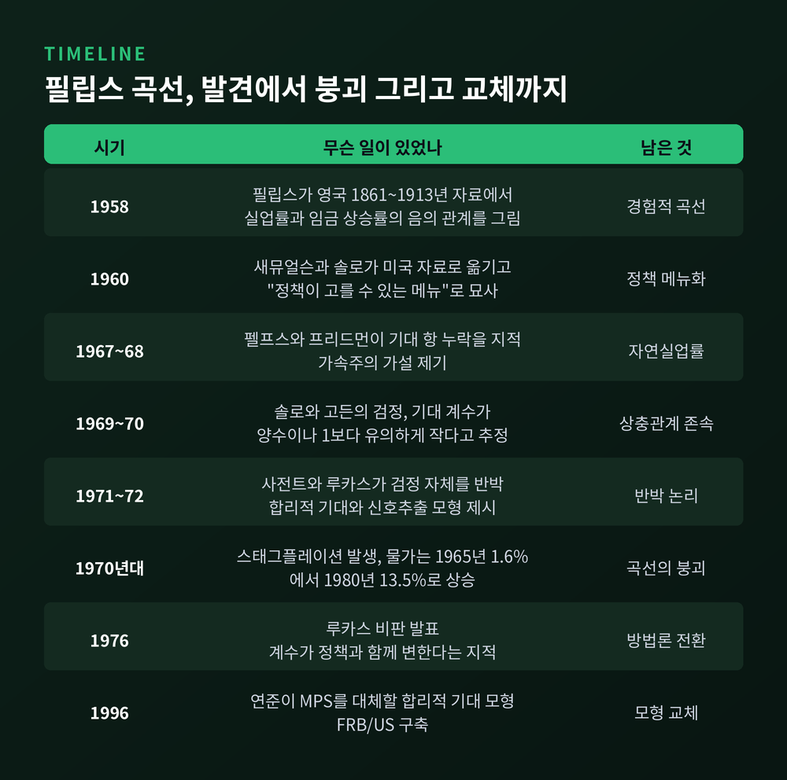
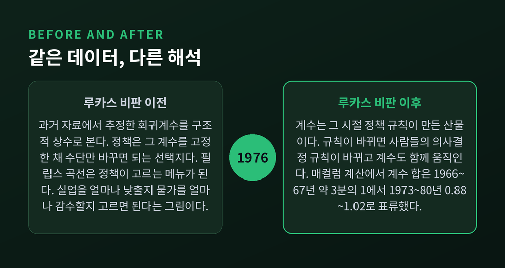
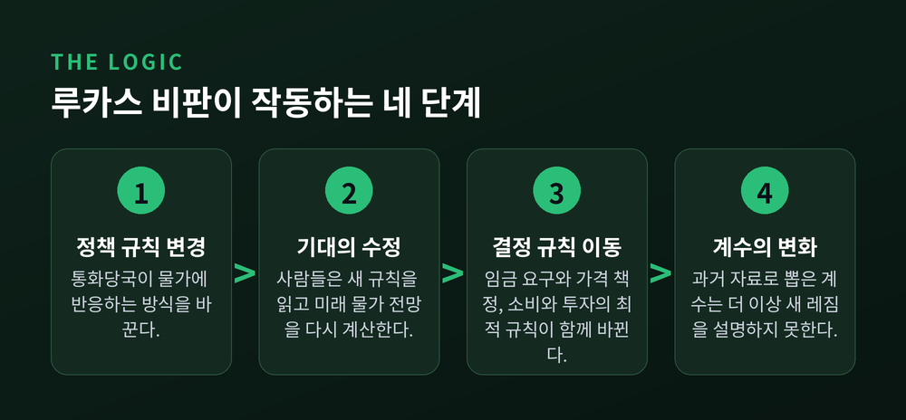
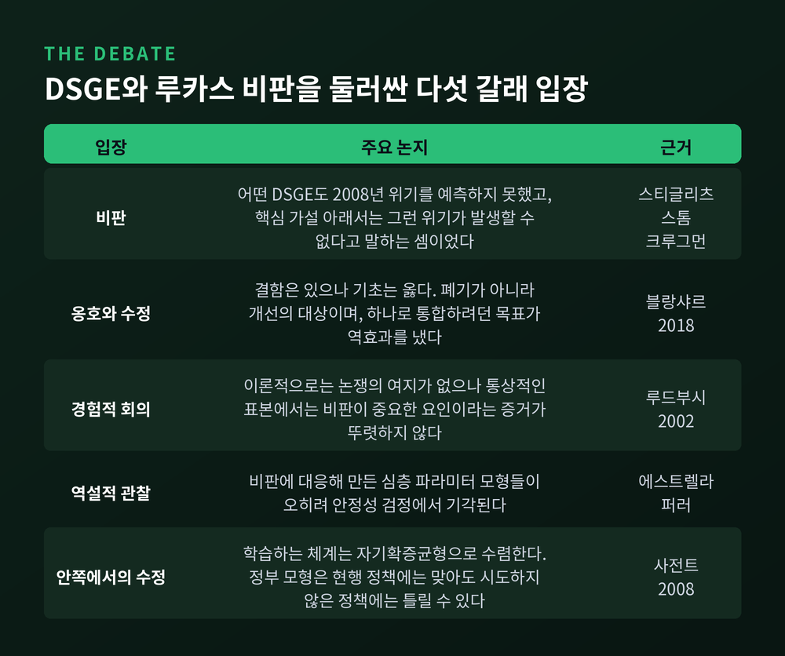

루카스 비판과 합리적 기대, 정책이 바뀌면 계량모형 예측은 왜 빗나가나
이번 글에서는 1976년 루카스 비판을 정리해 보겠습니다. 정책이 바뀌면 왜 기존 계량모형의 예측이 빗나가는지, 그 논리와 이후 반세기의 논쟁을 함께 살펴봅니다. 결론부터 말씀드리면 이렇습니다. 과거 데이터로 추정한 계수는 그 시절의 정책 규칙이 만들어낸 산물이고, 규칙이 바뀌면 계수도 함께 움직입니다.
1976년, 로버트 루카스가 던진 문제
로버트 루카스는 1976년 카네기-로체스터 학술지에 「계량경제 정책평가: 하나의 비판」을 실었습니다. 분량은 19쪽부터 46쪽까지, 스물여덟 쪽에 불과합니다.
논지는 단순합니다. 계량모형으로 정책 실험의 효과를 예측하는 절차 자체가 잘못되었다는 것입니다.
이유는 이렇습니다. 정책이 바뀌면 경제의 구조가 바뀝니다. 더 정확히는, 경제주체의 최적 의사결정 규칙이 정책과 함께 체계적으로 변합니다. 그런데 기존 정책평가는 이 사실을 무시한 채, 과거 자료에서 뽑아낸 회귀계수를 새 정책의 효과 계산에 그대로 가져다 씁니다. 새 정책 아래에서는 그 계수 자체가 다른 값이 되어 있는데도 말입니다.
루카스가 든 대표적 오류 사례가 필립스 곡선이었습니다. 인플레이션을 실업률에 회귀시켜 얻은 관계를, 정책이 마음대로 골라 쓸 수 있는 구조적 상충관계로 읽어버린 것입니다.
그는 이 문제를 임금·물가 방정식에만 국한하지 않았습니다. 소비함수와 투자함수에도 같은 난점이 있다고 지적했습니다.
필립스 곡선은 어떻게 '정책 메뉴'가 되었나
거슬러 올라가 보겠습니다.
1958년 A.W. 필립스는 영국의 1861년부터 1913년까지 자료에서 실업률과 임금 상승률의 음의 관계를 그렸습니다. 관측점을 찍고 단순한 통계 절차로 볼록한 곡선을 얹은 그림이었습니다.
1960년 새뮤얼슨과 솔로가 이를 미국 자료로 옮겼습니다. 그리고 결정적인 표현을 남깁니다. 이 곡선은 정책이 고를 수 있는 '메뉴'라는 것이었습니다. 그들은 전후 구간을 두고 물가를 잡으려면 실업률이 8% 정도는 되어야 할 것이라고 판단했습니다.
필립스의 발표로부터 10년이 채 지나기 전에, 인플레이션과 실업 사이에 비교적 안정적인 장기 상충관계가 있다는 생각이 굳어졌습니다. 이 상충관계는 당대 주요 거시계량모형의 심장부에 자리 잡았습니다.

물론 반론은 일찍 나왔습니다. 프리드먼(1968)과 펠프스(1967)는 기대 항이 빠져 있다고 지적했습니다. 이른바 가속주의 가설입니다. 펠프스는 일시적으로 실업을 낮추면 인플레이션은 영구적으로 높아진다고 강조했습니다.
솔로(1969)와 고든(1970)은 이를 검증할 방법을 만들었습니다. 임금 방정식에서 기대 인플레이션 계수가 1이면 장기 상충관계는 없다는 구조였습니다. 결과는 어땠을까요. 다양한 추정치 모두 계수가 양수였지만 1보다는 유의하게 작았습니다. 장기 상충관계가 아주 사라지지는 않는다는 뜻이었습니다.
계수가 표류했다 — 붕괴의 실제 기록
1970년대에 스태그플레이션이 왔습니다. 인플레이션과 실업이 동시에 올랐습니다. 당대 케인지언 모형에서는 일어날 수 없는 일이었습니다.
미국 물가는 1965년 1.6%에서 1980년 13.5%로 올랐습니다. 이 20년 가까운 국면을 '대인플레이션'이라 부릅니다.
여기서 가장 인상적인 증거는 통계 그 자체입니다. 매컬럼(1994)은 인플레이션의 5차 자기회귀를 여러 표본 구간에서 추정해 계수 합을 계산했습니다.
- 1966~67년: 약 3분의 1
- 1968~70년: 약 3분의 2
- 1973~80년: 0.88에서 1.02
구조적 상수라고 믿었던 값이 시대에 따라 1을 향해 걸어간 것입니다. 계량 모형 제작자들이 가속주의 쪽으로 기울어간 이유가 여기 있습니다.
사전트(1971)와 루카스(1972)는 솔로·고든의 검정 자체를 반박했습니다. 방법은 정교했습니다. 가속주의가 정확히 옳은데도 그 방식의 계량경제학자라면 틀린 결론에 도달하게 되는 예시 경제를 만들어 보인 것입니다. 인플레이션이 지속 성분과 일시 성분으로 나뉘고 지속 성분이 ρ만큼의 관성을 가질 때, 장기 상충관계가 전혀 없어도 추정치는 ρ로 나옵니다. 1보다 작으니 "상충관계가 있다"고 읽히는 것입니다.
사전트의 직관은 이랬습니다. 1960년대 중반까지 인플레이션에는 계열상관이 크지 않았습니다. 영구적 물가 변화가 없던 시절에 만들어진 기대는, 그런 변화에 대비하도록 설계되어 있지 않습니다.

사람들은 정책을 읽는다 — 합리적 기대와 신호추출
루카스는 1972년 「기대와 화폐의 중립성」에서 그 메커니즘을 모형으로 보였습니다.
생산자는 자기 시장의 가격만 봅니다. 자기 물건 값이 올랐을 때, 그것이 상대가격 상승인지 일반 물가 상승인지 알 수 없습니다.
합리적인 대응은 변화의 일부를 물가 탓으로, 일부를 상대가격 탓으로 배분하는 것입니다. 그래서 생산을 조금 늘립니다. 모든 기업이 같은 판단을 하면 경제 전체의 산출이 잠재수준을 넘습니다.
여기서 공급곡선의 기울기는 θ에 달려 있습니다. θ는 개별 가격 분산 가운데 상대가격 변동이 차지하는 몫입니다. 상대가격 변동이 작아지면 θ는 0으로 가고, 공급곡선은 거의 수직이 됩니다. 통화정책이 산출에 미치는 힘이 사라진다는 뜻입니다.
결론은 이렇습니다. 예상하지 못한 통화 충격만 실질 산출을 움직입니다. 예상된 통화정책은 물가만 올립니다.
사전트와 월러스(1975)는 이를 정책 무력성 명제로 정리했습니다. 정부가 산출을 늘리려 통화를 풀면, 주체들이 먼저 알아채고 임금과 물가 기대를 올립니다. 실질임금이 그대로이니 산출도 그대로입니다.
다만 전제가 두 개 필요합니다. 가격과 임금이 완전히 신축적일 것, 그리고 기대가 합리적일 것. 가격이 경직적이면 기대가 합리적이어도 예상된 통화정책이 실물에 영향을 줍니다. 이 단서가 훗날 뉴케인지언 모형의 출발점이 됩니다.

규칙과 재량, 그리고 중앙은행 독립성
여기서 자연스럽게 이어지는 논문이 킷랜드와 프레스컷의 1977년 「재량보다 규칙」입니다.
핵심은 시간 비일관성입니다. 합리적이고 앞을 내다보는 정부에게 나중에 계획을 다시 짤 기회를 주면, 정부는 일반적으로 계획을 바꿉니다.
통화정책에 적용하면 이렇습니다. 중앙은행이 낮은 물가를 약속하면 사람들의 기대가 낮아집니다. 그런데 기대가 낮아진 바로 그 순간, 산출을 조금 더 얻기 위해 약속에서 이탈할 유인이 생깁니다. 사람들이 그 유인을 알면 애초에 약속을 믿지 않습니다.
루카스 비판이 "정책 규칙이 바뀌면 민간의 결정 규칙도 바뀐다"였다면, 시간 비일관성은 그 따름 명제입니다. 민간이 반응한다는 사실을 정부가 알기 때문에, 재량을 가진 정부는 좋은 규칙을 지켜낼 수 없습니다.
그래서 규칙, 위임, 독립성이 정책 설계의 언어가 되었습니다. 두 사람은 2004년 노벨경제학상을 받았습니다. 스웨덴 왕립과학원은 이들의 연구가 경제 연구를 바꿨을 뿐 아니라 경제정책, 특히 통화정책의 실무에 깊은 영향을 미쳤다고 평가했습니다.
대응 — 미시적 기초와 심층 파라미터
비판은 파괴로 끝나지 않았습니다. 대응이 뒤따랐습니다.
방향은 하나였습니다. 정책이 바뀌어도 변하지 않는 파라미터를 찾자는 것입니다. 선호와 기술처럼 사람의 취향과 생산 기술에 관한 값이라면 정책 레짐과 무관하게 안정적이지 않겠느냐는 발상입니다. 이것을 '심층 파라미터'라 부릅니다.
여기서 미시적 기초를 갖춘 동태확률일반균형, 곧 DSGE 모형이 나옵니다. 오일러 방정식을 직접 추정하고, 명시적 최적화를 갖춘 일반균형 모형을 캘리브레이션하고, 가격 경직성을 넣은 뉴케인지언 모형을 세웁니다. 스멧츠와 바우터스(2003)의 유로존 모형이 표준형이 되었습니다. 칼보 방식의 가격 조정, 습관 형성, 자본조정비용, 가변 가동률이 들어갑니다. 추정된 임금계약 지속기간은 4~5분기 수준으로 나왔습니다.
정책평가의 초점도 옮겨갔습니다. "정책수단을 이 경로로 움직이면 어떻게 되나"에서 "정책 규칙을 이렇게 바꾸면 어떻게 되나"로 질문이 바뀐 것입니다.
중앙은행 모형도 실제로 교체되었습니다. 1996년까지 미국 중앙은행은 장기 상충관계가 없는 대규모 합리적 기대 모형 FRB/US를 구축했습니다. 구모형 MPS와의 차이는 뚜렷했습니다.
목표 물가를 영구히 낮추는 시뮬레이션에서, FRB/US는 충격 시점에 장기 국채 금리가 약 80bp 급락합니다. 반면 정책금리는 첫해 평균 40bp 남짓 내려갈 뿐입니다. 정책이 주로 기대라는 통로로 작동한다는 뜻입니다. 구모형 MPS에서는 통화증가율을 낮추면 명목금리가 첫 3년간 평균 300bp 넘게 올라가는 그림이 나왔습니다.
같은 팀의 보고 가운데 눈길이 가는 대목이 있습니다. 정책의 신뢰성이 불완전하면 디스인플레이션의 실업 비용이 두 배 이상으로 불어날 수 있다는 것입니다.
볼커 디스인플레이션이 남긴 숫자와 해석
이론만으로는 판정이 나지 않습니다. 실제 레짐 전환이 있었습니다.
1979년 8월 볼커가 연준 의장이 되었습니다. 그해 10월 6일 특별 FOMC에서 통화량 증가율 타깃으로 전환했습니다. 연방기금금리는 1979년 초 10%에서 1981년 중반 19%까지 올랐습니다.
대가는 컸습니다. 1979년부터 1982년까지 실질산출이 정체했고, 실업률은 10%를 넘었습니다. 1982년에만 약 2만 5천 개 기업이 문을 닫았습니다. 전후 최고치였습니다. 물가는 1980년 3월 14.8% 정점에서 1982년 말 6.2%, 1983년 3.2%로 내려왔습니다.
맨큐의 교과서적 계산에 따르면 희생비율은 약 1.5입니다. 자연실업률을 6%로 놓고, 물가가 1981년 9.7%에서 1985년 3%로 6.7%p 떨어지는 동안 누적 순환실업이 9.5%p였다는 계산입니다.
여기서 해석이 갈립니다. 한쪽은 볼커 아래에서 연준의 신뢰가 회복되었기에 비용이 이 정도로 그쳤다고 봅니다. 다른 쪽은 신뢰가 불완전했기에 그만큼의 비용이 들었다고 봅니다. 킹은 미국 역사에서 불완전 신뢰성이 필립스 곡선에서 한 역할이 여전히 열린 핵심 연구 과제라고 적습니다.
당시 논쟁도 한쪽으로 기울어 있지 않았습니다. 토빈(1980)은 임금·물가 결정이 엇갈려 이뤄지므로 각 집단이 상대적 지위를 걱정하며 조금씩만 디스인플레이션할 것이라 보았습니다. 소득정책 없이 통화 긴축에 경제를 묶는 것은 무모하다는 입장이었습니다. 사전트는 반대편에서 「네 차례 대인플레이션의 종말」로 답했습니다. 극적이고 지속적인 정책 전환은 신뢰만 받는다면 비교적 낮은 실업 비용으로 물가를 잡을 수 있다는 것이었습니다.
그래서 루카스 비판은 얼마나 맞았나
여기서 균형을 잡을 필요가 있습니다.
샌프란시스코 연준의 루드부시(2002)는 이렇게 정리합니다. 이론적으로 루카스 비판에는 이론이 없습니다. 축약형 모형은 정책이 유발한 구조 변화에 불변일 수 없습니다. 그런데 경험적 중요성은 논쟁 중입니다.
관찰된 사실이 어긋납니다. 테일러 규칙 추정치들은 지난 수십 년간 연준의 반응이 분명히 이동했음을 보여줍니다. 그런데 VAR 같은 축약형 모형은 여전히 구조적 안정성이 잘 기각되지 않습니다. 루카스 비판이 옳다면 축약형이 흔들려야 하는데 그러지 않는 것입니다.
루드부시의 화해안은 이렇습니다. 통상적인 거시 표본 크기에서는 루카스 비판이 큰 요인이라는 증거가 별로 없습니다. 역사적 정책 이동의 크기가 그리 크지 않았고, 그럴듯한 전향적 모형의 축약형이 정책 이동에 둔감하기 때문입니다.
다만 단서가 붙습니다. 어떤 축약형이 관찰된 범위의 정책 이동에 대해 대략 불변이더라도, 역사적 경험 바깥의 정책 변화를 다루는 분석에는 적합하지 않을 수 있다는 것입니다.
가장 아이러니한 대목은 따로 있습니다. 루카스 비판에 대응하려고 만든 심층 파라미터 모형들 자체가 안정성 검정에서 기각된다는 점입니다. 오일러 방정식에서, 명시적 최적화 일반균형 모형에서, 그리고 매우 전향적인 뉴케인지언 모형에서 각각 안정성 귀무가설이 기각되었습니다.
에스트렐라와 퍼러(1999)의 보고는 더 직설적입니다. 최근 문헌의 일부 전향적 모형이, 적합도가 더 좋은 후향적 모형보다 오히려 덜 안정적일 수 있다는 증거를 제시했습니다. 2002년 논문에서는 이런 모형들이 충격에 대해 변수가 '점프'한다고 함의하지만, 실제 데이터는 완만한 혹 모양 반응을 보인다고 지적했습니다.

2008년 이후, 그리고 사전트의 자기확증균형
2008년 8월 블랑샤르는 "거시의 상태는 좋다"고 썼습니다. 다음 달 금융위기가 터졌습니다.
비판은 매서웠습니다. 어떤 DSGE 모형도 위기를 예측하지 못했습니다. 더 곤란한 것은 예측 실패를 넘어, 합리적 기대와 외생적 충격이라는 핵심 가설 아래에서는 그런 형태와 규모의 위기가 아예 일어날 수 없다고 말하는 셈이었다는 점입니다. 표준 DSGE는 신용평가사와 파생상품에 대해 할 말이 거의 없었습니다. 솔로, 스티글리츠 등은 미시적 기초 자체가 실제 행동에 관한 실증 연구를 반영하지 못한다고 지적했습니다. 크루그먼은 DSGE가 실제로 작동하던 접근들을 밀어냈다는 점을 문제 삼았습니다.
옹호와 수정의 목소리도 분명합니다. 블랑샤르는 2018년 논문에서 현재의 DSGE 모형은 결함이 있지만 올바른 기초를 담고 있으며 폐기가 아니라 개선의 대상이라고 썼습니다. 다만 하나의 모형으로 모두를 통합하려던 목표는 역효과를 냈다고 봅니다. 그는 일반균형 모형을 공통 코어 위에 기초이론용, 정책용, 장난감용, 예측용으로 나누자고 제안했습니다.
사전트의 답은 합리적 기대의 안쪽에서 나왔습니다. 2008년 미국경제학회 회장 취임강연 「진화와 지적 설계」입니다.
그는 두 갈래 아이디어를 나란히 놓습니다. 합리적 기대 균형을 부과하고 최적 정책을 설계하는 '지적 설계', 그리고 금본위제에서 불환지폐로 넘어오며 명목 앵커를 잃어버린 오랜 시행착오의 '진화'입니다.
핵심 개념은 자기확증균형입니다. 학습하는 주체들의 체계는 대개 합리적 기대 균형이 아니라 이곳으로 수렴합니다. 여기서 정부의 확률모형은 현행 정책 아래 실제로 일어나는 사건에 대해서는 옳습니다. 그러나 시도해 보지 않은 다른 정책의 결과에 대해서는 틀려 있을 수 있습니다. 균형경로 밖에서는 관측이 부족하니 대수의 법칙이 작동하지 않기 때문입니다.
이 지적이 아픈 이유가 있습니다. 합리적 기대 균형 안에서의 영리한 정책 설계는, 관찰되지 않을 사건에 대한 기대를 알고 다루는 데 달려 있습니다. 그런데 자기확증균형에서는 역사 데이터에 잘 맞으면서도 잘못된 정책을 함의하는 정부 모형이 살아남습니다.
사전트는 이 틀로 1970년대를 다시 읽습니다. 통화당국의 목적이 변하지 않았다고 가정하면, 왜 1960년대 말에는 물가를 방치하고 1980년대에는 잡았는가. 답은 인플레이션과 실업의 관계에 대한 학습과 망각의 과정일 수 있다는 것입니다. 사전트와 심스는 2011년 노벨경제학상을 실증 거시경제학 기여로 공동 수상했습니다.
정리하면 이렇습니다.
예전에는 모형이 세상을 향해 일방적으로 말을 걸었습니다. 지금은 세상이 모형을 읽고 되받아친다는 사실을 전제하고 모형을 세웁니다. 이 전환을 만든 것이 루카스 비판입니다.
다만 완결된 승리는 아닙니다. 이론적 타당성과 경험적 중요성은 다른 문제이고, 대안으로 세워진 심층 파라미터조차 검정에서 흔들립니다. 여전히 열려 있는 자리가 많습니다.
"모형이 예측을 내놓는 순간, 그 예측을 읽은 사람들이 예측의 전제를 바꾼다."
정책을 다루는 사람에게 이 문장이 여전히 유효하냐고 물으신다면, 저는 반세기가 지난 지금도 그렇다고 답하겠습니다.